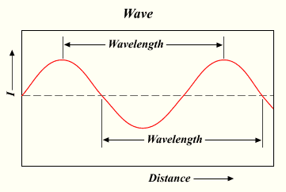

Workshop 6
Digital Signal Processing (DSP) and Audio
What Sound Is
"Hold Me - Luigi Talluto"
-
A series of increase and decrease in air pressure, that our ears hear
- (However, the differences need to occur in a certain window of time, otherwise we don't hear it. More on that later)
- The sound we hear is a result of series of changes in values. The wider the change between one value to the next, the louder it seems; the narrower, the quieter it seems
What Sound Is (Cont'd)
The waveform from earlier but zoomed in to a particular portion of the sound. That waveform probably represents 1/500th of a second
Loudness
|
amplitude: 0.3981... |
amplitude: 0.8912... |
* Those graphs are not accurate. They just show different amplitudes
How we perceive loudness
- humans perception of loudness is relative from one sound to the other
- the difference needs to be exponential to be perceptible
What it takes for a person to say "hey it's louder!"
How we perceive loudness (cont'd)
- we can either represent loudness as the range of a linear function (i.e. f(x) = mx + b, where m and b are constants and x is a variable)...
- but better yet, we can represent loudness as the range of a logarithmic function (i.e. f(x) = A×logb(x/c), where A, b, and c are constants, and x is a variable)
How we perceive loudness (cont'd)
- in signal processing, the logarithmic function used to represent "loudness" is known as the Decibel scale
- there are many Decibel scales
-
Example:
- dBu: 0 dBu = 0.775 (personal stereo)
- dBV: 0 dBV = 1 (professional stage audio)
- dBFS: 0 dBFS = 1 (digital audio)
- dBu: 0 dBu = 0.775 (personal stereo)
Visually interpreting loudness
http://fc03.deviantart.net/fs70/f/2010/006/9/c/Equalizer_by_dl33t.gif
Visually interpreting loudness (cont'd)
For some amplitude, A, of the given sound:
- dBu: v = 20 × log(|A|/0.775)
- dBV: v = 20 × log(|A|)
- dBFS: v = 20 × log(|A|)
- (for A ≠ 0)
Amplifying or atenuating a signal
- A×10v/20
-
Examples:
- dBu: c = 0.775×10v/20
- dBV: c = 10v/20
- dBFS: c = 10v/20
You take the resulting c and multiply it with the signal for amplification or atenuation
Pro and Cons of using the logarithmic scale to represent loudness
-
Pro
-
Allows us to more easily scale loudness so that it's perceivable
- Hence why it's used on most (if not, all) devices and software
-
Allows us to more easily scale loudness so that it's perceivable
-
Con
- We will never reach true silence with this scale
- Hard to even represent silence with this scale!
- why? Well, log(x) is undefined for any values of x less than or equal to 0!
- If you don't know what you're doing, a value in the Decibel scale doesn't make any sense
The Decibel Scale (Approximation)
The rate of change, and pitch
|
440 Hz, -3 dBFS |
880 Hz, -3 dBFS |
The rate of change, and pitch
- The closer together the peaks and valleys the higher the pitch
- The farther apart, the lower the pitch
The rate of change, and pitch
- The pitch is closely related with "frequency" (however, formally, pitch is not measured in frequency. Pitch is a measure on its own)
- The closer the peaks and valleys, the higher the frequency
- Frequency is measured in Hertz (Hz)
- Frequency determines how often a wave changes from the highest peak, to the lowest valley in a second
- So 1 Hz represents a wave going from the highest peak to the lowest valley only once in one second
- 10 Hz represents a wave going from the highest peak to the lowest valley ten times in one second
Aside: the pitch and the human hearing
- Humans can only hear sounds as low as 16 Hz, and as high as 20,000 Hz (20 kHz)
-
Any sound not within that range is never heard
- However, if loud enough, sounds below 16 Hz is often felt by the body
Summary
- Loudness: height of peaks and valleys, also known as amplitude
- Pitch: the distance between peaks and valleys, also known as frequency
How multiple sound sources are added together
- They're just summed together
-
Three things may happen to certain parts of the wave
- Get a higher amplitude by a facter of anything greater than 1 to a maximum of 2
- Decrease in amplitude by a factor of anything in between 0 to 1 (not inclusive)
- Cancel out entirely
- So, in your applications, if you have more than one sound source, just add them up
Application in the real world
Noise cancelling headphones
Outputs the audio with amplitudes flipped
What sound is in computer systems

http://www.alsa-project.org/alsa-doc/alsa-lib/wave1.gif A sketch of an analog waveform |

http://www.alsa-project.org/alsa-doc/alsa-lib/wave2.gif A sketch of a digital waveform |
What Sound is in computer systems (cont'd)
- when it comes to DSP, computer systems don't work with continuous streams
- They work with finite and discrete set of ordered numbers (e.g. numbers stored in arrays)
- These sets are formally called point-code modulation (PCM)
- Elements inside PCM are called "samples"
What Sound is in computer systems (cont'd)
-
in modern day computers, one second of audio is popularly encoded in 44100 samples
- However, a second of audio can be encoded in less or more samples, if preferred
- That 44100 samples per second number is more formally called the "samplerate"
-
The unit for samplerate is Hertz (Hz)
- As far as samples is concerned, Hertz is the unit of measure of how many things happen in a second
- (If some audio data has a samplerate of x, how long does a single sample last?)
What sound is in computer systems (cont'd)
- to mimic audio localization, more than one audio sources can be recorded and played back
- when more than one set of PCM data is available for playback, these sets are called "channels"
-
commonly, most digital audio sources are encoded to have two channels
- one to be played back by a "left" speaker
- the other to be played by a "right" speaker
- some can have five channels (such as Dolby Surround sound): one for front-left, front-right, back-left, back-right, and centre
What Sound is in computer systems (cont'd)
-
PCM data can be stored as raw data (WAV)
- In a—for example—WAV file, if more than one PCM data set is available for more channels, the header data must indicate that there is more than one set of data available
-
PCM data can be stored losslessly compressed (ALAC, FLAC)
- Again, headers must indicate the number of PCM data that is available
-
PCM data can also be lossily compressed (Ogg Vorbis, AAC, MP3)
- Again, headers must indicate the number of PCM data that is available
What sound is in computer systems (cont'd)

https://ccrma.stanford.edu/courses/422/projects/WaveFormat/wav-sound-format.gif
What sound is in computer systems (cont'd)
- Although, not always, but some software systems prefer working with powers of 2 chunks of PCM data at the time
- Allows for better analysis (spectral analysis) of PCM data
- The larger these chunks, the better our analysis and modification, however, it is much slower to parse
- The smaller these chunks, the worse our analysis and modification, however, it is much faster to parse
What sound is in computer systems (cont'd)
An example in JavaScript
var context = new AudioContext();
var processor = context.createScriptProcessor(
// Chunk (buffer) size.
512,
// Number of input channels
1,
// Number of output channels
2
);
processor.onaudioprocess = function (e) {
var L = e.outputBuffer.getChannelData(0);
var R = e.outputBuffer.getChannelData(1);
// L and R are both mutable arrays of numbers. Do stuff with them.
}
What Sound is (A Theoretical approach)
Fourier's theorem: a wave form is the sum of many sine waves, each with different periods (a.k.a. frequencies), phases and amplitudes
These sine waves are also often called "harmonics"
Review: A Sine Wave

http://upload.wikimedia.org/wikipedia/commons/6/64/Wavelength.png
-
The sine wave is generated by the sine function (often abbreviated to
sin)- drawing the sine wave on a graph is simply
for (var x = 0; x < someLargeValue; x++) { y = sin(x); }
- drawing the sine wave on a graph is simply
Review: A Sine Wave (cont'd)

http://media.giphy.com/media/NKLdcqhwo2f8A/giphy.gif
- The sine function's input (domain) is a rotation value, which we normalize to 2π
- The sine function's output (range) represents the vertical (often called y) coordinate when drawing a circle at a particular angle (where that circle's centre is located at the origin (0,0))
Review: A Sine Wave (cont'd)
sin(x) |
0.5sin(x) |
3sin(x) |
-sin(x) |
- Increasing the coefficient (greater than 1) on the sine function's output results in results in larger amplitudes
- Clamping the coefficient to anywhere between 0 and 1 (not inclusive) on the sine function's output results in smaller amplitudes
- Negating the output results in an inverted output
Review: A Sine Wave (cont'd)
sin(x) |
sin(2x) |
sin(-x) |
- Increasing the coefficient on the sine function's input results in shorter periods (higher frequencies)
- Clamping the coefficient to anywhere between 0 and 1 (not inclusive) on the sine function's input results in longer periods (lower frequencies)
- Negating the output result in the output going the other way
Review: A Sine Wave (cont'd)
sin(x) |
sin(x - 1) |
sin(x + 1) |
- adding by a constant results in a translation of the sine wave by that constant's amount towards the left
- conversely, subtracting by a constant results in a translation of the sine wave by that constant's amount towards the right
A simple square wave

http://mathworld.wolfram.com/images/eps-gif/SquareWave_700.gif
http://www.audiocheck.net/download.php?filename=Audio/audiocheck.net_sqr_1000Hz_-3dBFS_3s.wav
A simple square wave (cont'd)
Recall, fourier's theorem: a wave is a sum of its sine waves
http://i.stack.imgur.com/6yngK.gif
A simple square wave (cont'd)
http://i.stack.imgur.com/JhZnq.png
Note: the green line represents the sum of the waves. All others represents the harmonics
A simple square wave (cont'd)
http://upload.wikimedia.org/wikipedia/commons/0/0a/Synthesis_square.gif

Another example: the sawtooth wave
http://upload.wikimedia.org/wikipedia/commons/d/d4/Synthesis_sawtooth.gif
http://www.audiocheck.net/download.php?filename=Audio/audiocheck.net_saw_1000Hz_-3dBFS_3s.wav
Digitally Extracting Harmonics from waves
Extracting Harmonics from waves
Discrete Fourier Transform (DFT)
http://nayuki.eigenstate.org/res/how-to-implement-the-discrete-fourier-transform/dft.js
var n = pcm.length;
var out = new Array(n);
for (var k = 0; k < n; k++) { // For each output element
var sumreal = 0;
var sumimag = 0;
for (var t = 0; t < n; t++) { // For each input element
var angle = 2 * Math.PI * t * k / n;
sumreal += inreal[t] * Math.cos(angle);
sumimag += inreal[t] * Math.sin(angle);
}
out[k] = {
real: sumreal,
imaginary: sumimag
};
}
The above algorithm is a proof of concept only. It should never be used for real-time DSP! (For anything that isn't real-time is fine.) Use a library that implements a fast Fourier transform (FFT), instead
Extracting Harmonics (cont'd)
- the DFT outputs a set of complex numbers
-
each element of the set encodes two values
- the amplitude
- the phase
- Don't be fooled by the JavaScript code. Although each element of the
outarray has two properties, they're actually related. They're in two properties because JavaScript lacks a "complex number" primitive
Extracting the amplitude
var amps = new Array(n);
for (var k = 0; k < n; k++) {
var real = out[k].real;
var imaginary = out[k].imaginary;
amps[k] = Math.sqrt(real*real + imaginary*imaginary)/n;
}
Extracting the phases
var phases = new Array(n);
for (var k = 0; k < n; k++) {
phases[k] = Math.atan2(out[k].imaginary, out[k].real);
}
Reconstructing the original wave (almost)
var pcm = new Array(n);
for (var k = 0; k < n; k++) {
pcm[k] = 0;
for (var j = 0; j < n; j++) {
pcm[k] += Math.sin(2 * Math.PI * k/sampleRate + phases[j]) * amps[j];
}
}
Never use the above algorithm in any real-time DSP applications!
Applications of DFT (and FFT)
- changing pitch of certain sounds
- extract specific features of audio, such as voice or instrumental
- extract melodies of leads of musical tracks
- applying effects to electronic music
- mimicking localization on stereo audio
- extracting spectral information for equalizer information
- studying ambient noise
Applying everything (Web Audio API)
var SAMPLES_BUFFER_SIZE = 128; // Can be any powers of 2.
var buffer = new Uint8Array(SAMPLES_BUFFER_SIZE);
var audioContext = new AudioContext();
var fft = audioContext.createAnalyser();
fft.fftSize = SAMPLES_BUFFER_SIZE;
// We'll initialize some audio source, and call it `src`
// There you have it, we are now performing frequency analysis on the audio.
src.connect(fft);
fft.getByteFrequencyData(buffer);
// `buffer` should now be populated with frequency domain data, with the ranges
// representing amplitudes in a logarithmic scale.